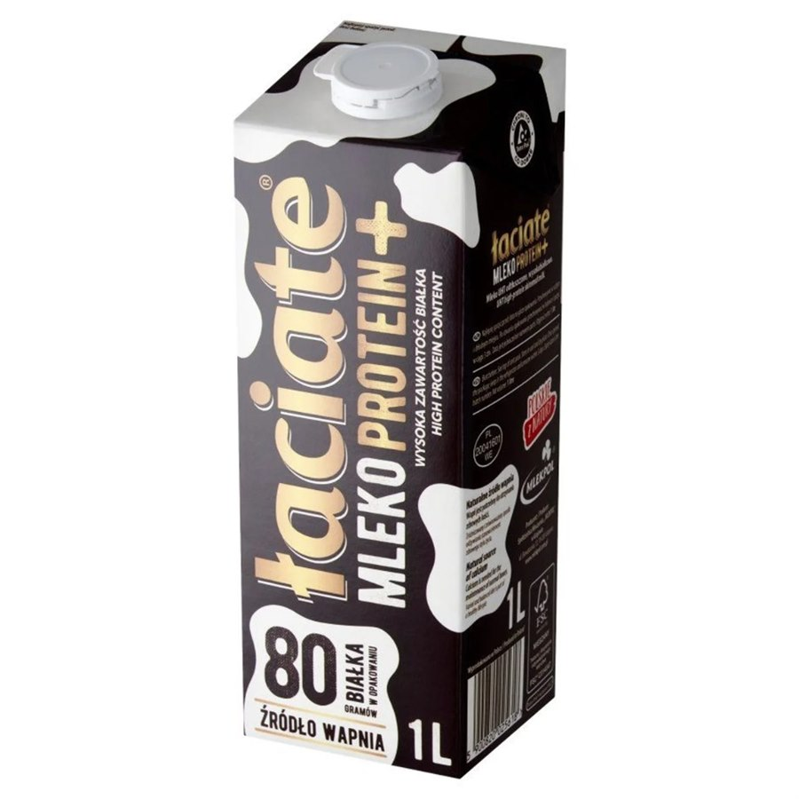
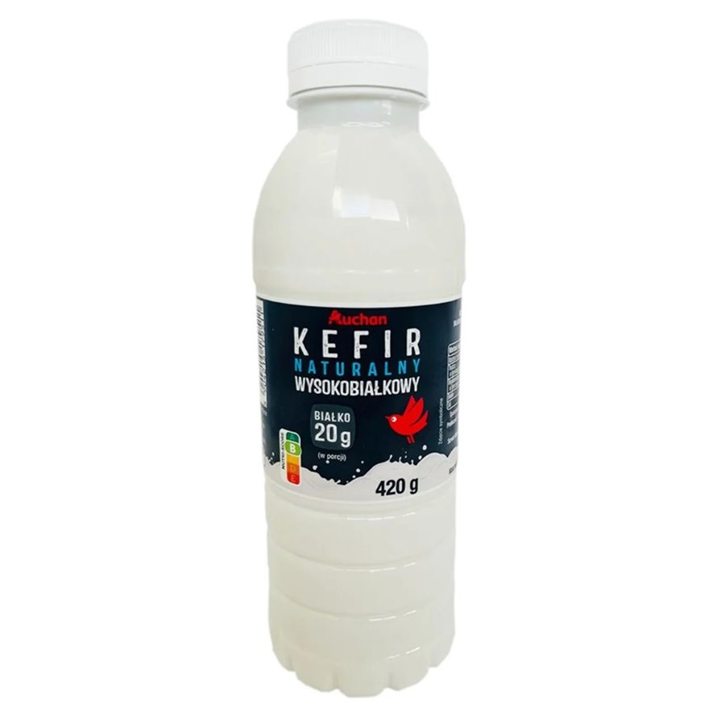

Mleko i kefiry — które są opłacalne kalorycznie?
0%, 0,5% i mleko białkowe vs klasyczne 3,2% — ta sama ilość białka, dużo mniej kcal
Opłacalność kaloryczna zależy od rodzaju mleka
„Mleko” w diecie to nie jeden produkt. Opłacalność kaloryczna — ile białka dostajesz za każdą kalorię — zależy w dużej mierze od zawartości tłuszczu i od tego, czy to zwykłe mleko, czy wersja wzbogacona w białko.
Tłuszcz w mleku 3,2% podbija kalorie, a białko zostaje podobne. Dlatego przy redukcji albo przy celu „więcej proteinów przy limicie kcal” wybór wersji ma realne znaczenie — nawet jeśli pijesz „tylko” kawę z mlekiem albo litr dziennie.
3,2% vs 0% — ponad dwa razy lepszy stosunek białko/kcal
Przeciętne mleko 3,2% ma na 100 ml produktu ok. 60 kcal i ok. 3,2 g białka.
Mleko 0% (odtłuszczone) ma na 100 ml ok. 33 kcal oraz ok. 3,3 g białka — czyli przy prawie tej samej ilości proteinów jest ponad dwa razy bardziej opłacalne w relacji białko–kalorie.
| Rodzaj (orientacyjnie) | kcal / 100 ml | Białko / 100 ml | kcal na 1 g białka |
|---|---|---|---|
| Mleko 3,2% | ~60 | ~3,2 g | ~19 kcal |
| Mleko 0% | ~33 | ~3,3 g | ~10 kcal |
| Mleko białkowe (np. Protein+) | zależnie od marki | często ~8 g | zwykle najlepszy stosunek białko/kcal |
Zakładając, że pijesz 1 litr mleka dziennie, przejście z 3,2% na 0% to spokojnie ok. 270–300 zbędnych kcal mniej przy tej samej (albo nawet lekko wyższej) ilości białka. W skali tygodnia to już kilka tysięcy kcal — bez zmiany „objętości” nawyku.
Opłacalne produkty: 0%, 0,5% i mleko białkowe
Do codziennego picia, owsianki, kawy i shake’ów najlepiej sprawdzają się:
- mleko i produkty nabiałowe 0% tłuszczu,
- ewentualnie 0,5%, jeśli wolisz odrobinę „ciała” w smaku,
- a także mleko białkowe / high protein — więcej gramów białka w tej samej objętości.
Przykład z półki: Łaciate Mleko Protein+ (UHT odtłuszczone, wysokobiałkowe). Na 1 l deklarowane jest m.in. 80 g białka w opakowaniu, czyli ok. 8 g na 100 ml.
To wyraźnie więcej niż klasyczne ~3,2 g — przy profilu odtłuszczonym kalorie nie rosną jak w pełnym 3,2%. Takie produkty są wygodne, gdy chcesz podbić białko bez dokładania porcji mięsa albo twarogu. Nadal sprawdzaj etykietę — „protein” bywa różnie dawkowane między markami.

To samo dotyczy kefirów
Kefir też bywa „zwykły” albo wysokobiałkowy. Przy redukcji warto wybierać wersje 0% / bardzo chude albo oznaczone high protein — dostajesz więcej białka (często w porcji zbliżonej do jogurtu / skyru) przy rozsądnej liczbie kcal.
Przykład: Auchan Kefir naturalny wysokobiałkowy (420 g) z deklaracją ok. 20 g białka w porcji. To już poziom sensownej przekąski białkowej, nie tylko „napoju do obiadu”.
Logika jest ta sama co przy mleku: mniej tłuszczu + więcej białka na 100 g = lepsza opłacalność kaloryczna.

Jak to wpleść w dzień
- Kawa i herbata — mleko 0% albo białkowe zamiast 3,2%.
- Owsianka / płatki — wersja 0% potrafi zejść z bilansu o setki kcal tygodniowo.
- Przekąska — kefir wysokobiałkowy albo skyr zamiast słodkiego nabiału 3–5%.
- Policz swoje TDEE w kalkulatorze i zobacz, czy 300 kcal z samego mleka to u Ciebie „luźny bufor”, czy cały deficyt.
Podsumowanie
- Opłacalność kaloryczna mleka zależy od rodzaju — tłuszcz podbija kcal, białko niekoniecznie.
- 0% / 0,5% i mleko białkowe dają lepszy stosunek białko–kalorie niż 3,2%.
- Przy 1 l dziennie możesz zejść z ok. 300 kcal bez utraty białka.
- Kefiry wysokobiałkowe działają na tej samej zasadzie — warto czytać etykietę, nie tylko smak.